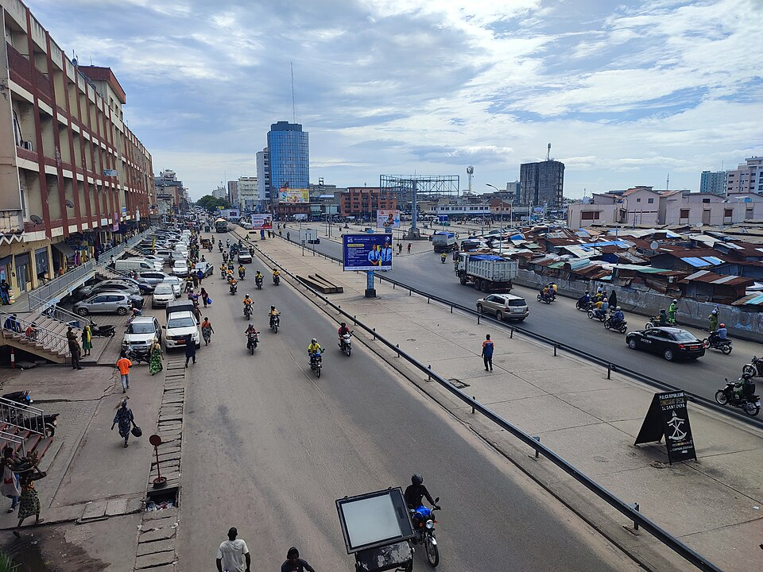

Bienvenue
Le Bénin se trouve en Afrique de l'Ouest, entre le Togo et le Nigeria, avec le Burkina Faso et le Niger au nord. Au sud, il s'ouvre sur l'océan Atlantique par une côte de sable bordée de cocotiers.
Sa capitale officielle est Porto-Novo, mais c'est à Cotonou que se trouvent le gouvernement et la plus grande partie de l'activité économique. Dans les rues, les zémidjans, les taxis-motos, sont partout.

Le Bénin en bref
- Capitale Porto-Novo
- Plus grande ville Cotonou
- Langue officielle Français
- Monnaie Franc CFA
Au programme
Sur la page Histoire et patrimoine, je vous emmène à Abomey, Ouidah et Porto-Novo. La page Nature et paysages présente le lac Nokoué, la Pendjari, les chutes de Kota et la côte.
Photo : Marché Dantokpa, Alacoolwiki, CC BY 4.0, via Wikimedia Commons.